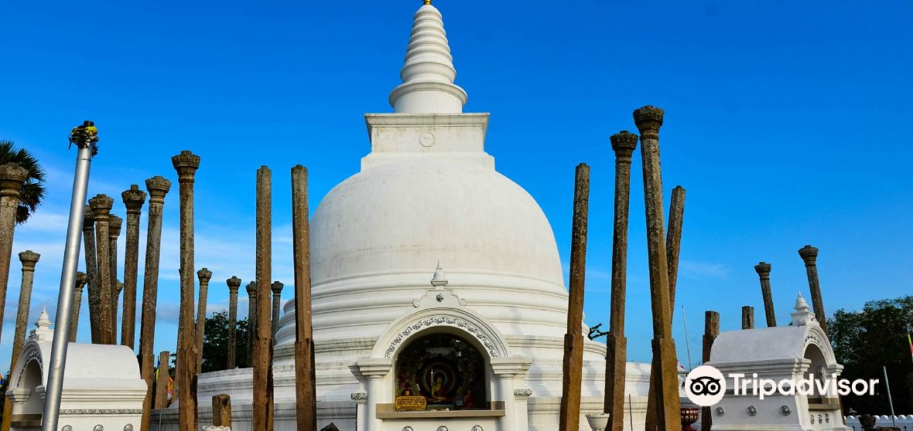
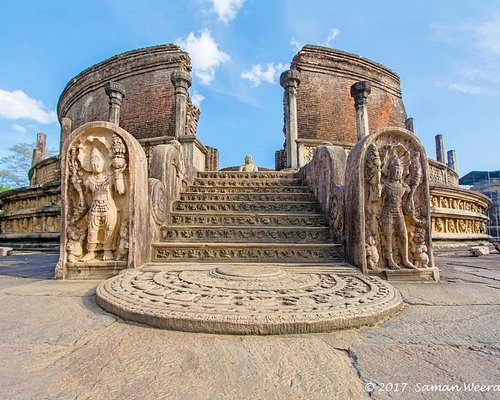

SRI LANAKA TRAVEL GUIDER
The best tourist company in Sri Lanka. Hospitality and hotel facilities are available through our company. For the first 50 tourists, we provide a 50% discount.
Dalada Maligawa
.jpg)
Yes. International visitors with valid tourist visas are welcome to visit Sri Lanka. Sri Lankan residents and dual citizens can also enter the country.
Sri Lanka's history is connected with those of the Indian subcontinent as a whole, as well as the neighboring regions of South Asia, Southeast Asia, and the Indian Ocean. Early human remains discovered on Sri Lanka's island date back to around 38,000 years ago.
Sri Lanaka Travel Guider our company. Mr. Rohana is the CEO, and Mr. Dushmantha is the Director. This is the official website of our company. SriLanakaTravelGuider@gmail.com is our official email address. We'll notify you as soon as possible if there's an issue. Sri Lanka Travel and Tourism puts all of this at your fingertips so you may experience the tranquil island for yourself. Sri Lanaka Travel Guider Company is a travel guide company based in Sri Lanka. Local Travel and Tour Experts design the tours. Above all, it is the second best tourist destination in the world.
Our business is open 24 hours a day, seven days a week. You can make a payment through internet banking. You can run into us at any time. You, on the other hand, make an appointment with our secretary to discuss our strategy. Miss.Manusha Shamali is the manager. On our website, you can choose from a variety of locations. Who Are Experts in Providing Sri Lanka Holiday Tour Packages. Guaranteed lowest pricing. SRI LANAKA TRAVEL GUIDER is one of Sri Lanka's most well-known tour operators and travel agents.
The best tourist company in Sri Lanka. Hospitality and hotel facilities are available through our company. For the first 50 tourists, we provide a 50% discount.
Sinharaja Forest Reserve is a forest reserve and a biodiversity hotspot in Sri Lanka. It is of international significance and has been designated a Biosphere 9 KB (986 words) - 12:58, 3 January 2022 List of World Heritage Sites in Sri Lanka.

About Hikkaduwa Famous for its long sandy beach, west-coast Hikkaduwa also boasts good waves for surfers, reefs for snorkelers and divers, plus sand-side hotels, restaurants, and bars.
The province is surrounded by the Northern Province to the north, the Bay of Bengal to the east, the Southern Province to the south, and the Uva, Central and North Central provinces to the west. The province's coast is dominated by lagoons, the largest being Batticaloa Lagoon, Kokkilai lagoon, Upaar Lagoon and Ullackalie Lagoon .
The Northern Province is one of the nine provinces of Sri Lanka, the first level administrative division of the country.
Nainativu Nagapooshani Amman Temple [Tamil: நயினாதீவு நாகபூசணி அம்மன் கோயில், romanized: Nayiṉātīvu Nākapūcaṇi Am'maṉ Kōyil - Meaning: Nainativu (island/city of the temple); Nagapooshani (The Goddess who wears snakes as jewellery); Amman (Goddess)] is an ancient and historic Hindu temple located amidst the Palk Strait on the island of Nainativu, Sri Lanka. It is dedicated to Parvati who is known as Nagapooshani or Bhuvaneswari and her consort, Shiva who is named here as Nayinaar. The temple's fame is accredited to Adi Shankaracharya, a 9th-century Hindu philosopher, for identifying it as one of the prominent 64 Shakti Peethams in Shakti Peetha Stotram and its mention in the Brahmanda Purana. The temple complex houses four gopurams (gateway towers) ranging from 20–25 feet in height, to the tallest being the eastern Raja Raja Gopuram soaring at 108 feet high. The temple is a significant symbol for the Tamil people, and has been mentioned since antiquity in Tamil literature, such as Manimekalai and Kundalakesi. The present structure was built during 1720 to 1790 after the ancient structure was destroyed by the Portuguese in 1620. The temple attracts around 1000 visitors a day, and approximately 5000 visitors during festivals. The annual 16-day Mahostavam (Thiruvizha) festival celebrated during the Tamil month of Aani (June/July) - attracts over 100,000 pilgrims. There is an estimated 10,000 sculptures in this newly renovated temple.
Nallur Kandaswamy Kovil (Tamil: நல்லூர் கந்தசுவாமி கோவில் Sinhala: නල්ලුරුව ස්කන්ධ කුමාර කෝවිල) is a significant Hindu temple, located in Nallur, Northern Province, Sri Lanka.[2] The presiding deity is Lord Murugan in the form of the holy 'Vel' in the Sanctum, the primary shrine, and in other forms, namely, Shanmugar, Muthukumaraswami, Valli Kaanthar with consorts Valli and Deivayanai, and Thandayuthapani, sans consorts in secondary shrines in the temple
.jpg)
The town's attractions include the golf course, trout streams, Victoria Park, and boating or fishing on Lake Gregory. Victoria Park is an attractive and well-used oasis.
Temple of the Sacred Tooth Relic or Sri Dalada Maligawa [a]; commonly known as the ශ්රී දළදා මාළිගාව (Glorious Tooth Temple) (Note - The word ‘Temple’ is an incorrect translation of the word Maligawa. The English word for ‘Maligawa’ is ‘Palace’.), is a Buddhist temple in Kandy, Sri Lanka. It is located in the royal palace complex of the former Kingdom of Kandy, which houses the relic of the tooth of the Buddha. Since ancient times, the relic has played an important role in local politics because it is believed that whoever holds the relic holds the governance of the country. The relic was historically held by Sinhalese kings. The temple of the tooth is a World Heritage Site mainly due to the temple and the relic. Bhikkhus of the two particular chapters, the Malwathu chapters and Asgiri chapters conduct daily worship in the inner chamber of the temple. Rituals are performed three times daily: at dawn, at noon, and in the evenings. On Wednesdays, there is a symbolic bathing of the relic with a herbal preparation made from scented water and fragrant flowers called Nanumura Mangallaya; this holy water is believed to contain healing powers and is distributed to those present. The temple sustained damage from bombings by Janatha Vimukthi Peramuna in 1989, and by Liberation Tigers of Tamil Eelam in 1998. However it was fully restored each time.
Sigiriya or Sinhagiri (Lion Rock Sinhala: සීගිරිය, Tamil: சிகிரியா/சிங்ககிரி, pronounced see-gi-ri-yə) is an ancient rock fortress located in the northern Matale District near the town of Dambulla in the Central Province, Sri Lanka. It is a site of historical and archaeological significance that is dominated by a massive column of rock around 180 metres (590 ft) high.[2] According to the ancient Sri Lankan chronicle the Culavamsa, this area was a large forest, then after storms and landslides it became a hill and was selected by King Kashyapa (477 – 495 AD) for his new capital. He built his palace on top of this rock and decorated its sides with colourful frescoes. On a small plateau about halfway up the side of this rock he built a gateway in the form of an enormous lion. The name of this place is derived from this structure — Sīnhāgiri, the Lion Rock (an etymology similar to Sinhapura, the Sanskrit name of Singapore, the Lion City). The capital and the royal palace were abandoned after the king's death. It was used as a Buddhist monastery until the 14th century.[3] Sigiriya today is a UNESCO listed World Heritage Site. It is one of the best preserved examples of ancient urban planning
Dambulla cave temple (Sinhala: දඹුල්ල රජමහා විහාරය Dam̆būlū Len Vihāraya, Tamil: தம்புள்ளை பொற்கோவில் Tampuḷḷai Poṟkōvil) also known as the Golden Temple of Dambulla is a World Heritage Site (1991) in Sri Lanka, situated in the central part of the country.[1] This site is situated 148 kilometres (92 mi) east of Colombo , 72 kilometres (45 mi) north of Kandy and 43 km (27 mi) north of Matale Dambulla is the largest and best-preserved cave temple complex in Sri Lanka. The rock towers 160 m over the surrounding plains. There are more than 80 documented caves in the surrounding area. Major attractions are spread over five caves, which contain statues and paintings. These paintings and statues are related to Gautama Buddha and his life. There are a total of 153 Buddha statues, three statues of Sri Lankan kings and four statues of gods and goddesses. The latter include Vishnu and the Ganesha. The murals cover an area of 2,100 square metres (23,000 sq ft). Depictions on the walls of the caves include the temptation by the demon Mara, and Buddha's first sermon. Prehistoric Sri Lankans would have lived in these cave complexes before the arrival of Buddhism in Sri Lanka as there are burial sites with human skeletons about 2700 years old in this area, at Ibbankatuwa near the Dambulla cave complexes.

Badulla is the southeast border of central hills in the upcountry which is the transport portal to the east coast. One of the oldest towns of Sri Lanka invaded by Portuguese and British consequently became one of their main economic hubs.
It is believed that the temple bears a history dating back to about 2,000 years. Historically, the Dhowa temple was known as the Kumbaltissa Ariyagala Vehera, named after its chief priest who had provided sanctuary for King Walagamba, who turned the cave into a temple. Work at the temple was not completed during the reign of King Walagamba, but was fully completed during the Kandyan Kingdom. The Temple was declared a protected heritage site and an archaeological protected monument in Sri Lanka in 1996.

Adisham Hall, or Adisham Bungalow is a country house near Haputale, in the Badulla District, Sri Lanka. At present, it houses the Adisham monastery of Saint Benedict. It has a relic (a chip of a bone) of St. Sylvester at the chapel.[1] Sir Thomas Villiers was awarded 7 acres from the Tangamale Strict Nature Reserve by an act of the British parliament. The house was built in 1931 by an English aristocrat and planter Sir Thomas Villiers, former Chairman of George Steuart Co, a trading and estate agency based in Colombo. Sir Thomas was a grandson of Lord John Russell and descendant of the Dukes of Bedford. Named after Adisham, it was designed by R. Booth and F. Webster in Tudor and Jacobean style. Adisham Hall played host to many prominent personalities of the colony until the retirement of Sir Thomas, after which it was purchased by Don Charles Wijewardene and his daughter Rukmini Wijewardene, owners of Sedawatte Estates, in 1950. While studying at LSE, London, Rukmini Wijewardene, in order to thank him for the sale, made a courtesy call on Sir Thomas Villiers who was, by then, living in Knightsbridge, London. Don Charles and Rukmini were the husband and daughter of Vimala Wijewardene.[2] In 1961 Rukmini Beligammana (née Wijewardene) sold it to an Italian Benedictan monk. Upon purchasing the house and property the Italian monk removed silver cutlery and a few items of furniture in order to recover his investment and also make a profit. After leaving it unoccupied for two years he subsequently donated the house and property to the Ampitiya Benedictine Monastery in 1963. The house is well preserved along with its period fittings and furniture, and is open to visitors

Falls is a small but beautiful waterfall lying hidden inside the jungle on the Ella – Wellawaya Road. Not the closest waterfall to Ella, but still people go there to enjoy a bath as it got a natural pool like area to have some fun. Nothing like an enchanting waterfall to provide you with a magnificent playground that you can truly enjoy, right? If you are planning on staying 2-3 days in Ella and got a vehicle, plan a visit to this place, you will enjoy some quality and peaceful time as it's not crowded at all like (You can go on a bus and take a tuk tuk) We highly recommend the place, if you love water and wanna have some splash time. But be safe on a rainy day as not easy to get some quick help!
The Ruwanwelisaya is a stupa and a hemispherical structure containing relics, in Sri Lanka, considered sacred to many Buddhists all over the world. Two quarts or one Drona of the Gothama Buddha's relics are enshrined which is the largest collection of his relics anywhere.

Thuparamaya is the first Buddhist temple that was constructed, after the arrival of mahinda thero(mahindagamanaya) in Sri Lanka. Located in the sacred area of Mahamewna park, the Thuparamaya Stupa is the earliest Dagoba to be constructed in the island, dating back to the reign of King Devanampiya Tissa (247-207 BC).[1] The temple has been formally recognised by the Government as an archaeological site in Sri Lanka
The Jetavanarama stupa or Jetavanaramaya (Sinhala: ජේතවනාරාමය, romanized: jētavanārāmaya) is a stupa, or Buddhist reliquary monument, located in the ruins of Jetavana monastery in the UNESCO world heritage city of Anuradhapura, Sri Lanka. At 122 metres (400 ft), and was the world's tallest stupa and the third tallest structure in the world[4] when it was built by King Mahasena of Anuradhapura (273–301). He initiated the construction of the stupa[5]: 49 following the destruction of the Mahaviharaya of Anuradhapura. His son Maghavanna I completed the construction of the stupa, and was renovated by Parakramabahu I of Polonnaruwa. A part of a sash or belt tied by the Buddha is believed to be the relic that is enshrined here. The structure is significant in the island's history as it represents the tensions within the Theravada and Mahayana sects of Buddhism; it is also significant in recorded history as one of the tallest structures in the ancient world and the tallest non-pyramidal building; the height of the stupa was 122 metres (400 ft) making it the tallest stupa in the ancient world. With the destruction and abandonment of Anuradhapura kingdom in the 11th century, the stupa with others was covered by jungle. King Parakramabahu in 12th century tried to renovate this stupa and it was rebuilt to the current height, a reduction from the original height. Today it stands at 71 metres (233 ft). The compound covers approximately 5.6 hectares and is estimated to have housed 10,000 Buddhist monks. One side of the stupa is 176 m (576 ft) long, and the flights of stairs at each of the four sides of it are 9 m (28 ft) wide. The doorpost to the shrine, which is situated in the courtyard, is 8 m (27 ft) high. The stupa has a 8.5 m (28 ft) deep foundation, and sits on bedrock. The structure is no longer the tallest, but it is still the largest, with a base-area of 233,000 m2 (2,508,000 sq ft). Approximately 93.3 million baked bricks were used in its construction; the engineering ingenuity behind the construction of the structure is a significant development in the history of the island.
.jpg)
The Polonnaruwa Vatadage is an ancient structure dating back to the Kingdom of Polonnaruwa of Sri Lanka. It is believed to have been built during the reign of Parakramabahu I to hold the Relic of the tooth of the Buddha or during the reign of Nissanka Malla of Polonnaruwa to hold the alms bowl used by the Buddha. Both these venerated relics would have given the structure a great significance and importance at the time. Located within the ancient city of Polonnaruwa, it is the best preserved example of a vatadage in the country, and has been described as the "ultimate development" of this type of architecture. Abandoned for several centuries, excavation work at the Polonnaruwa Vatadage began in 1903. Built for the protection of a small stupa, the structure has two stone platforms decorated with elaborate stone carvings. The lower platform is entered through a single entrance facing the north, while the second platform can be accessed through four doorways facing the four cardinal points. The upper platform, surrounded by a brick wall, contains the stupa. Four Buddha statues are seated around it, each facing one of the entrances. Three concentric rows of stone columns had also been positioned here, presumably to support a wooden roof. The entire structure is decorated with stone carvings. Some of the carvings at the Polonnaruwa Vatadage, such as its sandakada pahanas, are considered to be the best examples of such architectural features. Although some archaeologists have suggested that it also had a wooden roof, this theory is disputed by others.
North Western Province is a province of Sri Lanka. The districts of Kurunegala and Puttalam formulate Wayamba. Its capital is Kurunegala, which has a population of 28,571. The province is known mainly for its numerous coconut plantations.

Yapahuwa served as the capital of Sri Lanka in the latter part of the 13th century (1273–1284). Built on a huge, 90 meter high rock boulder in the style of the Sigiriya rock fortress, Yapahuwa was a palace and military stronghold against foreign invaders. The palace and fortress were built by King Buvanekabahu I (1272–1284) in the year 1273. Many traces of ancient battle defences can still be seen, while an ornamental stairway, is its biggest showpiece. On top of the rock are the remains of a stupa, a Bodhi tree enclosure, and a rock shelter/cave used by Buddhist monks, indicating that earlier this site was used as a Buddhist monastery, like many boulders and hills in the area. There are several caves at the base of the rock. In one of them there is a shrine with Buddha images. One cave has a Brahmi script inscription. At the southern base of the rock there is a fortification with two moats and ramparts. In this enclosure there are the remains of a number of buildings including a Buddhist shrine. There is also a Buddhist temple called Yapahuwa Rajamaha Vihara built during the Kandyan period. The Tooth Relic was brought from Dambadeniya and kept in the Tooth Temple built for the purpose at the top of the third staircase. The relics were carried away from the temple here to South India by the Pandyas, and then recovered in 1288 by Parakkramabahu III (1287–1293), who temporarily placed them in safety at Polonnaruwa.
It is now developing as a tourist destination. It has a marine sanctuary with a diversity of habitats ranging from bar reefs, flat coastal plains, saltpans, mangroves swamps, salt marshes and vast sand dune beaches. It provides nursing grounds for many species of fish and crustaceans. The coastal waters are also home to spinner, bottlenose and Indo-Pacific humpback dolphins, whales, sea turtles, and the elusive dugong. The Sri Lankan government has now formulated a master plan for the development of tourism industry here. Alankuda is a stretch of beach in Kalpitiya that is home to a number of beach hotels. The beach is a starting point for off-shore whale and dolphin watching in Kalpitiya and offers various water related activities. Hotels and resorts here include Bar Reef Resort, Palagama Beach, Khomba House, Udekki and Dolphin Beach Resort.
Wilpattu National Park (Willu-pattu, "Land of Lakes") is a national park in Sri Lanka. The unique feature of this park is the existence of "Willus" (natural lakes) – natural, sand-rimmed water basins or depressions that fill with rainwater. Located on the northwest coast lowland dry zone of Sri Lanka, the park is 30 km (19 mi) west of Anuradhapura and 26 km (16 mi) north of Puttalam (approximately 180 km (110 mi) north of Colombo). The park is 1,317 km2 (508 sq mi) (131,693 hectares) in area and ranges from 0–152 m (0–499 ft) above sea level. Nearly one hundred and six lakes (Willu) and tanks are found spread throughout Wilpattu. Wilpattu is the largest and one of the oldest national parks in Sri Lanka. Wilpattu is world-renowned for its leopard (Panthera pardus kotiya) population. A remote camera survey conducted in Wilpattu from July to October 2015 by the Wilderness and Wildlife Conservation Trust captured photographs of forty-nine individual leopards in the surveyed area, the core area density of which was between that of Yala National Park's Block I and Horton Plains National Park. From December 1988 to 16 March 2003, the park was closed due to security concerns surrounding the Sri Lankan Civil War, before being reopened to visitors sixteen years later. Visitor access is currently limited to approximately 25% of the park, the remainder of which is dense forest or scrub. Popular visiting periods span between the months of February and October, although there are a number of private ecotourism groups that conduct safaris year-round.
Gangaramaya Temple is one of the most important temples in Colombo, Sri Lanka, being a mix of modern architecture and cultural essence. Located on the Beira Lake, it was completed in the late 19th century.

Gangaramaya Temple is one of the most important temples in Colombo, Sri Lanka, being a mix of modern architecture and cultural essence. Located on the Beira Lake, it was completed in the late 19th century.

Gampaha Botanical Garden, also known as Henarathgoda Botanical Garden, is situated in the suburb of Gampaha. It was established in 1876 by the British to conduct experiments on exotic economic plants such as Rubber, and explore plant wealth and development of economy in the colony. The first imported rubber tree to Sri Lanka was first planted in this garden and it was the first seedlings of Brazilian rubber tree ever planted in Asia. The garden consists of a large variety of plants and many of them are from every corner of the tropical world it is expanding over 43 acres (0.17 km2) and situated next to the Attanagalu Oya and surrounded by paddy fields, a man-made green environment and a secondary forest as well laid out with many interesting sections, eye-catching landscaping and many shrubs, bushes and trees. This garden is a famous destination for youngsters.

Marino Beach Colombo has a restaurant, outdoor swimming pool, a fitness centre and bar in Colombo. 2.4 km from Galle Face Beach and 1.7 km from U.S. Embassy, the property offers a garden and a terrace. The accommodation features a 24-hour front desk, room service and currency exchange for guests. The hotel will provide guests with air-conditioned rooms with a desk, a kettle, a minibar, a safety deposit box, a flat-screen TV, a balcony and a private bathroom with a bidet. At Marino Beach Colombo rooms are equipped with bed linen and towels. Guests at the accommodation can enjoy a continental breakfast. Marino Beach Colombo offers a hot tub. Khan Clock Tower is 5 km from the hotel, while R Premadasa Stadium is 7 km from the property. The nearest airport is Ratmalana Airport, 13 km from Marino Beach Colombo. Couples particularly like the location — they rated it 8.9 for a two-person trip.


The Kelaniya Raja Maha Vihara or Kelaniya Temple is a Buddhist temple in Kelaniya, Sri Lanka. It is located 11 km (6.8 mi) north-east of Colombo. The current chief incumbent (chief priest) is Venerable Professor Kollupitiye Mahinda Sangharakkhitha Thera. The temple has often been associated with the rise and fall of Ceylon / Sri Lanka, with the popular saying that as the Kelaniya temple rose, Sri Lanka rose and as it fell, the country and its administration fell. It has thus had a deep association with the political powers of the country. It is also infamous for Mapitigama Buddharakkitha, the chief conspirator of the 1959 assassination of Ceylon's fourth Prime Minister S. W. R. D. Bandaranaike.[2] Buddharakkitha was the chief incumbent (chief priest) of the Kelaniya Raja Maha Vihara from 1947 to 1959